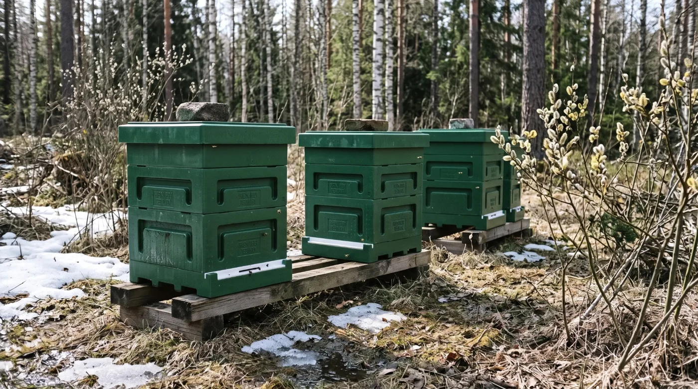
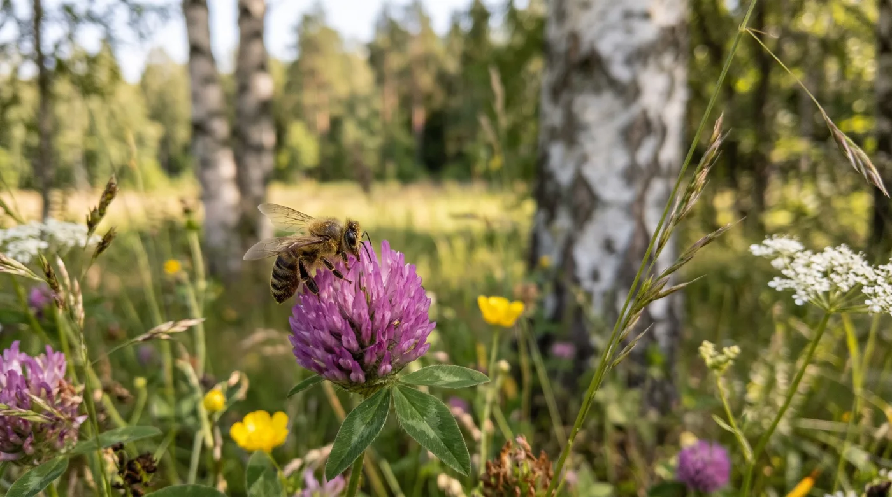
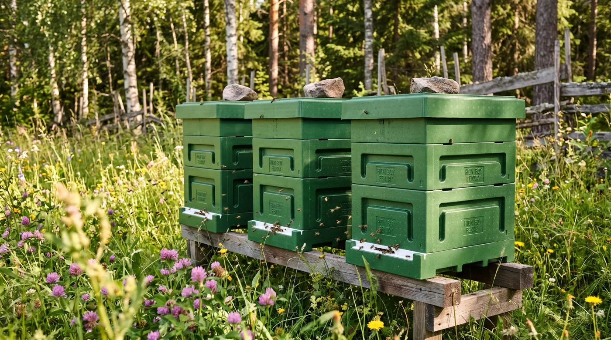
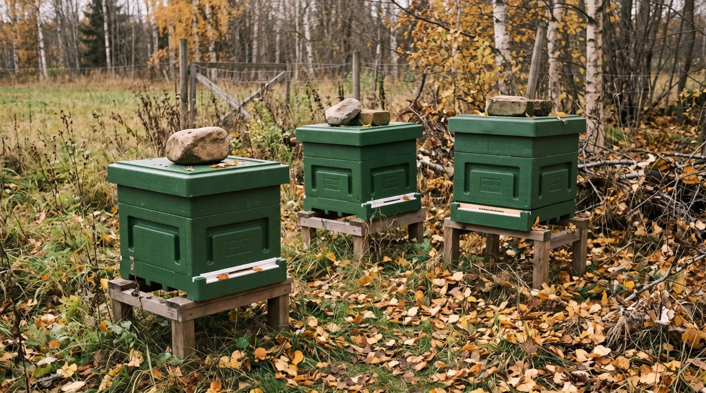
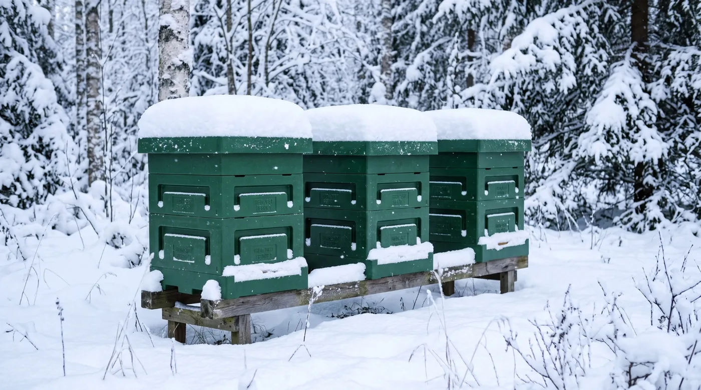

Kevät
Uusi kausi herää
Valon ja lämmön lisääntyessä pesän elämä vilkastuu. Ensimmäiset kukat tarjoavat ravintoa kasvavalle yhdyskunnalle.
MEHILÄISET & LUONTO
Hunajan tarina alkaa kukasta. Sen taustalla on mehiläisten yhteinen työ ja luonnon rytmi, joka muuttuu vuodenajan mukana.
Tutustu mehiläisten vuoteen
NELJÄ VUODENAIKAA
Pesän elämä jatkuu ympäri vuoden. Vuodenajat antavat sille tahdin.

Kevät
Valon ja lämmön lisääntyessä pesän elämä vilkastuu. Ensimmäiset kukat tarjoavat ravintoa kasvavalle yhdyskunnalle.

Kesä
Mehiläiset keräävät mettä ja siitepölyä. Kukinta ja sää vaikuttavat lentopäiviin sekä siihen, millaiseksi hunajasato muodostuu.

Syksy
Kukinnan vähentyessä yhdyskunta valmistautuu talveen. Mehiläishoitaja huolehtii talviravinnosta ja seuraa yhdyskunnan kuntoa.

Talvi
Mehiläiset eivät nuku talviunta. Ne kokoontuvat talvipalloon, ylläpitävät lämpöä ja käyttävät ravintovarastojaan kevääseen asti.
KUKASTA KUKKAAN
Tarhamehiläinen on yksi pölyttäjistä. Sen rinnalla kukilla käyvät esimerkiksi kimalaiset, erakkomehiläiset, perhoset ja kukkakärpäset.
Mehiläisten hoitaminen ja luonnonvaraisten pölyttäjien auttaminen täydentävät toisiaan. Monipuoliset kukkivat kasvit ja sopivat elinpaikat ovat tärkeitä myös niille lajeille, jotka eivät asu mehiläispesässä.
PIENIÄ TEKOJA
Oma piha tai parveke voi tarjota ruokaa ja suojaa.
Valitse eri aikaan kukkivia kasveja, jotta ravintoa riittää keväästä syksyyn. Pienikin kukkaruukku on hyvä alku.
Jätä osa nurmikosta kukkimaan. Kaikkea ei tarvitse niittää tai siistiä kerralla.
Säilytä pihalla mahdollisuuksien mukaan lahopuuta, kuivia kasvinvarsia ja rauhallisia luonnontilaisia kohtia.